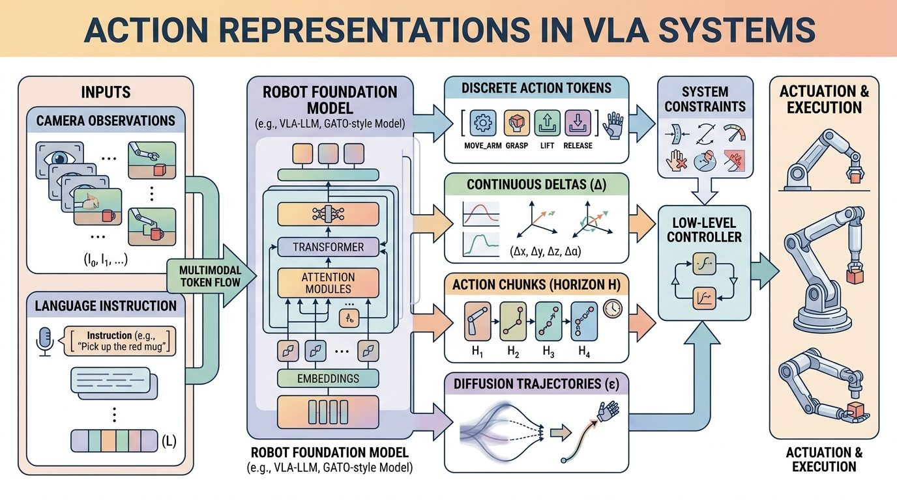
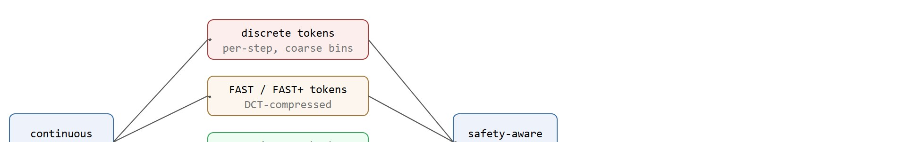
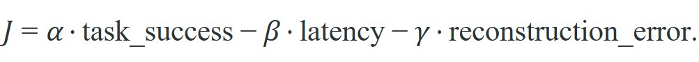

"Every action representation is a promise about what kinds of motion your policy can even imagine."
A Motion-Interface Designer

This section assumes familiarity with action chunking from section 22.2 and diffusion and flow-matching policy heads from sections 22.4 and 22.5. The autoregressive backbone perspective introduced in section 34.5 is also directly relevant to how discrete token representations are evaluated here. The action-interface trade-offs developed in this section carry forward into Chapter 35, where the same representations must remain coherent across changes in robot body and sensor configuration.
A robot hand reaching for a cup pauses, overshoots, and knocks it over. The policy was well-trained, but the action representation could not express the precise wrist flick the task demanded. Right now, as VLAs move from lab demos to real deployments, choosing how to encode actions has become the hidden bottleneck: get it wrong and no amount of additional training data fixes the ceiling you just built in. This section shows how discrete tokens, continuous chunks, diffusion heads, and hierarchical skills each carve up the space of possible motions differently, why that choice determines which failures you will debug at 2 a.m., and how to pick deliberately rather than by fashion.
Two teams train the same VLA on the same data. One robot threads a cable cleanly while the other keeps crushing it, and the only difference is a single line that chose how to encode actions. As Figure 34.9.1 illustrates, the action representation is the robot-facing API of the policy. It decides whether the model speaks in discrete symbols, smooth chunks, or continuous motor traces before any command reaches the controller. An action head compresses a continuous physical process into a model-friendly interface. The main trade-off pits compact discrete structure against faithful motor detail. We call this choice the representation ceiling problem: once you fix the action space, no training data recovers information the encoding discarded. Discretize too aggressively and small but important control variations vanish. Stay fully continuous and inference can slow down or drift out of alignment with autoregressive backbones.
A policy that cannot express the motion the task demands will fail with confidence, not with confusion.
On a physical robot, the ceiling is not abstract. A gripper closing at the wrong force by even a few percent slips a cable or crushes a component. If the encoding cannot express that force range, the controller never receives the signal, and retraining only refines which wrong value the policy predicts with highest confidence. The ceiling determines the floor of your failure rate.
Mechanically, the ceiling forms at the quantization or compression step. A Discrete Cosine Transform (DCT)-based tokenizer, for instance, projects a joint trajectory onto a fixed set of frequency basis functions and assigns each coefficient to a discrete bin. The bin rounds away any variation finer than one bin width before the model ever sees it. More demonstrations cannot restore that rounded-off variation. The same quantizer runs again at inference time, so the bin resolution bounds the output space regardless of how much capacity the policy has.
The field currently uses four broad strategies: per-step discrete tokens, compressed action tokens such as FAST and FAST+ (tokenizers that apply the DCT compression described above and then entropy-code the surviving coefficients), direct continuous chunks, and generative continuous heads such as diffusion or flow matching. The right answer depends on control rate, action smoothness, and how multi-modal the task is. Figure 34.9.2 lays out these four routes side by side, showing how each one discards different detail on the way from continuous motion to the controller.

A common misconception is that collecting more demonstration data can compensate for a coarse or poorly chosen action representation. This is incorrect in embodied AI systems: the quantization or compression step that defines the representation is applied both at training time and at inference time, so any motion variation finer than the encoding resolution is discarded before the model ever processes it and cannot be reconstructed at deployment. No amount of additional data restores information that the representation has structurally thrown away. The correct mental model is to treat the action representation as a hard ceiling set before training begins: choose the resolution and structure of that ceiling deliberately for the target task, because the policy can only approach it, never exceed it.
Think of the action representation as a sieve you place over a mixing bowl before any flour goes in. Once you have pressed dough through a coarse mesh, the fine particles that fell through are gone permanently: baking longer, at higher heat, or with better technique cannot reconstitute what the sieve discarded. In the same way, a coarse quantizer or a low-resolution DCT basis throws away fine motor variation before training starts, and every gradient update afterward only refines what passed through the mesh, never what was lost.
Token models usually fail through aliasing (two visibly different motions get rounded into the same discrete bin, so the model cannot tell them apart) and sequence length. Continuous heads usually fail through latency, calibration sensitivity, or weaker integration with language-model-style decoders.
Applying this to Figure 34.9.1's cup-reaching policy: at inference, the policy first checks its control frequency and task multi-modality (does the cup have one valid grasp approach, or several equally good ones?). A single-grasp reach at a modest control rate favors continuous chunks or FAST tokens, because the ceiling from Figure 34.9.2 is unlikely to bite at that resolution. A multi-modal task, such as choosing between two valid handle orientations, favors a diffusion or flow head, because discrete bins would force the policy to average across grasp modes rather than commit to one. This is the concrete decision Figure 34.9.1's controller box is making before any command reaches the gripper, and the Algorithm box below turns the same read into a step-by-step procedure.
Because the ceiling that each encoding imposes is only half the story, the other half being how much time and error each one costs at runtime, the choice needs a single objective that weighs fidelity and speed together.
A practical comparison uses both fidelity and runtime:

The application sets the coefficients. A dexterous high-rate hand trades model complexity for lower reconstruction error; a mobile manipulator under strict runtime bounds trades the other way, favoring a simpler, faster interface. How the action head meets the downstream controller shifts the balance further.
Code Fragment 1 contrasts a naive token budget with a chunked representation.
# Compare how many model outputs are needed for the same 1-second control horizon.
control_hz = 20
horizon_s = 1.0
timesteps = int(control_hz * horizon_s)
naive_tokens_per_step = 7
chunk_length = 5
chunk_outputs = timesteps // chunk_length
print(f"naive_token_predictions={timesteps * naive_tokens_per_step}")
print(f"chunk_predictions={chunk_outputs}")naive_token_predictions=140 chunk_predictions=4
Trace the DCT-based tokenizer on one joint sampled at 4 steps: positions x = [0.10, 0.30, 0.50, 0.40] radians. The 1D DCT-II coefficients are computed as $X_k = \sum_{n=0}^{3} x_n \cos\!\left[\frac{\pi}{4}\left(n+\tfrac12\right)k\right]$.
Step 1, forward transform. Evaluating the four coefficients gives approximately X = [1.300, -0.280, -0.100, 0.135]. Most energy sits in $X_0$ (the mean term) and $X_1$ (the dominant slope), which is exactly why DCT compresses smooth motion well.
Step 2, quantize. With 256 bins spanning the range $[-2, 2]$, each bin is $4/256 = 0.0156$ wide. Rounding to bin centers yields X_q = [1.297, -0.281, -0.094, 0.141]. Notice $X_2$ moved from -0.100 to -0.094: that 0.006 shift is the information the ceiling discarded.
Step 3, drop low-energy tail. A FAST-style scheme keeps only coefficients above a threshold, so $X_3 = 0.141$ might be zeroed, leaving [1.297, -0.281, -0.094, 0] to be entropy-coded into a short token string.
Step 4, inverse transform. Reconstructing gives x_hat ≈ [0.121, 0.286, 0.493, 0.401]. The mean absolute error is about 0.011 rad (0.6 degrees). If the robot's position deadband (the smallest position error the controller treats as meaningful rather than as noise) is 0.5 degrees, this trajectory just failed the inverse-transform check from the tip callout, and you would re-fit the bins rather than collect more data.
OpenVLA, openpi, and LeRobot toolchains let you swap among discrete-token, chunked, and continuous policy heads without rebuilding the entire training stack. That maintained abstraction matters once the action-interface trade-offs are understood well enough to choose a head deliberately.
With an objective that scores fidelity against runtime, the practical question is which representation wins that scoring under which operating conditions.
The table below includes hierarchical skills as a fifth option alongside the four representations from Figure 34.9.2; a hierarchical skill interface splits control into a high-level policy that picks a reusable motion primitive (a short, named skill such as "grasp" or "insert") and a low-level policy that executes it, so the action-representation choice described so far applies inside each low-level skill rather than to the whole task at once. The Algorithm box later in this section defines this split formally.
| Representation | Best when | Main risk |
|---|---|---|
| Naive discrete tokens | Low-rate commands or simple proof-of-concept setups | Long sequences and quantization error |
| FAST or FAST+ tokens | Smooth high-rate actions with autoregressive backbones | Tokenizer mismatch across embodiments |
| Continuous chunks | Short-horizon manipulation with explicit controllers | Chunk boundaries can hide mid-course correction needs |
| Diffusion or flow heads | Multi-modal continuous trajectories and dexterous behaviors | Sampling cost and runtime complexity |
| Hierarchical skills | Long-horizon tasks with reusable motion motifs | Low-level nuance may be hidden behind the skill interface |
Before working through the selection algorithm, ask yourself: if your policy predicts the wrong action because the representation could not express the required wrist angle, will the failure look like a wrong prediction or simply like a robot that stops mid-task for no obvious reason? The answer shapes how you diagnose and fix it.
Input: control frequency $f$ (Hz), action dimensionality $d$, task multi-modality flag $m \in \{0,1\}$, latency budget $L$ (ms), available demonstration count $N$
Output: selected representation $\hat{r}$ and objective coefficient triple $(\alpha, \beta, \gamma)$ for $J = \alpha \cdot \text{task\_success} - \beta \cdot \text{latency} - \gamma \cdot \text{reconstruction\_error}$
So far: the algorithm has ruled out discrete-only routes when the raw token budget is too high, ruled out slow diffusion heads when the latency budget is too tight, and locked in diffusion or flow-matching whenever the task itself is multi-modal; the remaining steps handle the non-multi-modal cases and add the safety checks before deployment.
Diffusion and flow heads are not automatically superior. If your robot runs at low frequency with nearly deterministic action choices, a simpler chunked or tokenized interface may be easier to deploy and debug.
At 50 Hz, a policy must respond within 20 ms per cycle. A diffusion head with 100 denoising steps at 0.1 ms each adds 10 ms of sampling overhead. That leaves almost no margin for the vision-language backbone. Teams using pi-zero on bimanual tasks cap denoising at 10 to 25 steps and accept slightly noisier trajectories.
FAST tokenizers trained on one embodiment create a separate failure mode. The codebook bins actions according to the velocity and position ranges from training. Apply that tokenizer to a robot with a different wrist range and the bins cluster near the center of the new workspace. The model then underestimates large wrist rotations and produces clipped or stalled motion. This is hard to diagnose without inspecting the tokenizer's inverse transform.
When transferring a FAST or FAST+ tokenizer to a new robot, run the tokenizer's inverse_transform on a held-out set of reference trajectories from the target embodiment before any policy training. If the round-trip reconstruction error (mean absolute error per joint) exceeds the robot's position-control deadband, re-fit the tokenizer's DCT bin boundaries on at least 500 target-embodiment demonstrations using fast_tokenizer.fit(target_demos, n_bins=256). Skipping this check is the single most common cause of silently clipped wrist motion, because the policy loss never signals the problem directly.
A Franka Panda arm opening a drawer at 10 Hz with a Cartesian impedance controller benefits from chunked continuous actions with chunk length 2 to 3 (covering 200 to 300 ms of horizon): the impedance controller absorbs small positional errors between chunks, so reconstruction precision of roughly 2 mm is sufficient and latency stays well under 20 ms per cycle. A Shadow Dexterous Hand or Allegro Hand manipulating cables at 50 Hz presents the opposite profile: individual fingertip displacements of 1 to 2 mm determine whether the cable is routed or dropped, the joint space has 16 to 22 degrees of freedom, and a raw token budget of $50 \times 22 = 1100$ per second makes naive discrete tokenization impractical. Teams training on Open X-Embodiment dexterous subsets have found that either a FAST+ tokenizer re-fit on at least 500 target-embodiment demonstrations or a flow-matching head capped at 25 denoising steps is needed to keep per-joint reconstruction error below the 0.5-degree position deadband typical of these hands. In practice, teams report that reaching that same error threshold without the re-fit can require on the order of tens of thousands of additional full-task demonstrations, while re-fitting on roughly 500 clips has been enough to cross it in some reported cases; exact numbers vary by hand and dataset, but the direction is consistent, because the re-fit raises the tokenizer ceiling before training rather than trying to paper over it with data. Skipping the re-fit and reusing a tokenizer trained on Franka data causes systematic underestimation of finger splay, which shows up as cables slipping rather than a clearly logged prediction error.
Physical Intelligence's pi-zero VLA ships a flow-matching action head that emits short continuous chunks rather than per-step discrete tokens, letting one model drive bimanual platforms like laundry folding and box assembly at high control rates. Their follow-on pi-zero-fast pairs the same backbone with the FAST tokenizer so the autoregressive variant can be trained more cheaply, a direct production example of swapping the action representation while keeping the policy fixed.
Choosing an action representation is like choosing whether to speak to the robot in syllables, full sentences, or dance notation. Every choice drops something and gains something.
Your robot runs at 50 Hz and needs smooth wrist motion. Which representation class would you rule out first, and why would its failure show up as a runtime or reconstruction problem?
Unified tokenizer-head co-design. Rather than treating tokenization and the policy head as independent choices, 2024-2025 work has begun optimizing them jointly. The FAST+ tokenizer (Pertsch et al., 2025, Physical Intelligence) demonstrated that DCT bin boundaries fitted on target-embodiment data reduce reconstruction error by roughly half compared to generic bins; follow-on work from the Berkeley Robot Learning Lab is exploring learned vector-quantized codebooks (a learned, finite set of representative action snippets that stands in for the DCT bins used elsewhere in this section) that are jointly trained with the transformer backbone so the codebook adapts to the distribution of tasks, not just trajectories.
Flow-matching with adaptive denoising budgets. Physical Intelligence's pi-zero-fast line and concurrent work at CMU's Robotics Institute show that diffusion-style heads can hit sub-20 ms latency if the number of denoising steps is made input-dependent (more steps for visually ambiguous scenes, fewer for routine motion). This direction is active and contested: some groups argue consistency models are a cleaner path to variable-step inference than adaptive schedulers.
Cross-embodiment action interfaces. The 2024 Octo model (Open X-Embodiment Collaboration, Berkeley) showed that a single flow head with embodiment-conditioning vectors can generalize across robot morphologies, but action-space coverage remains uneven: fine-fingered manipulation is underrepresented in current datasets. The RoboVerse and DROID datasets released in 2024-2025 are being used to probe how far cross-embodiment action heads can be pushed before per-robot fine-tuning becomes mandatory.
Open problem. No rigorous theoretical framework yet predicts when a shared tokenizer will transfer across embodiments versus when per-robot re-fitting is necessary. A tractable project would be to characterize the conditions (joint-range overlap, control-rate ratio, task distribution shift) under which a fixed FAST-style tokenizer's reconstruction error crosses the deadband threshold on a held-out target embodiment, using the Open X-Embodiment suite as a benchmark. This would give practitioners a principled stopping rule rather than the current heuristic of "re-fit on 500 demonstrations."
Action representation is not a small implementation detail. It is the part of the VLA that decides how motor intelligence is packaged, how latency accumulates, and which classes of motion error become likely.
Beginner (weekend): Use LeRobot with a Gymnasium reaching environment to train two policies side by side, one using discrete action tokens and one using continuous chunks, then plot the per-step reconstruction error for each. The key challenge is wiring LeRobot's policy-head swap API so both runs share the same replay buffer and evaluation loop without accidentally leaking configuration differences into the results.
Intermediate (1-2 weeks): Implement a FAST-style DCT action tokenizer in PyBullet or MuJoCo for a 7-DOF arm pick-and-place task, train an autoregressive policy head on top of it, then systematically vary the number of DCT bins (32, 64, 128, 256) and measure how task success rate and wrist reconstruction error change at each resolution. The key challenge is fitting separate tokenizers per bin count without letting velocity-range differences between the tokenizer training split and the evaluation split silently inflate the apparent reconstruction error.
Intermediate-plus (2 weeks): Build a ROS 2 node that accepts language commands from an OpenVLA-style model and translates predicted action chunks into Isaac Lab joint-position targets at 20 Hz, with a watchdog that falls back to a Proportional-Derivative (PD) hold if a chunk is not received within two control cycles. The key challenge is bridging the asynchronous token stream from the model server to the synchronous real-time control loop without introducing jitter that causes the impedance controller to oscillate at chunk boundaries.
For one robot task of your choice, compare a tokenized and a continuous action interface on the same control horizon. Write down the expected latency, reconstruction risk, and controller burden for each before you run anything.
Goal. Measure, empirically, how reconstruction error rises as a DCT action tokenizer is made coarser, and confirm that no amount of "data" beats a bin count that is too low.
Tools needed. Python with NumPy and SciPy (scipy.fft.dct / idct), plus Matplotlib. No robot or GPU required; a laptop CPU and 20 minutes are enough.
Procedure. Generate a synthetic 7-DOF trajectory of 200 timesteps by summing two or three low-frequency sinusoids per joint plus small Gaussian noise (this mimics smooth manipulation motion). For each joint, take the DCT, quantize the coefficients to n_bins uniform levels over the observed coefficient range, zero out coefficients below a fixed energy threshold, then inverse-DCT to reconstruct. Compute mean absolute error per joint in radians.
What to vary. Sweep n_bins over {16, 32, 64, 128, 256, 512} and, separately, sweep the energy-drop threshold. Independently, increase the number of synthetic trajectories you "train" on from 10 to 10000 while holding n_bins fixed at 32.
What to observe. Plot reconstruction MAE against n_bins: you should see a clear staircase where error halves roughly each time bins double, then flattens once quantization is finer than the noise floor. In the second sweep, confirm the error curve is flat against trajectory count, the empirical signature of the representation ceiling. Mark the deadband line at 0.5 degrees (about 0.0087 rad) and read off the minimum bin count that clears it. Bonus: replace uniform bins with quantiles fit to the data and watch the required bin count drop, mirroring the FAST+ re-fit result.
Chapter 35 broadens this action-interface discussion into full robot foundation models and cross-embodiment learning, where the action contract has to survive changes in robot body, sensor tree, and adaptation workflow.
Pertsch et al. (2025). "FAST: Efficient Action Tokenization for Vision-Language-Action Models."
The central reference for compression-based action tokenization and the FAST+ tokenizer.
Physical Intelligence. "openpi" repository.
Useful for seeing how pi-zero family models package flow-based and token-based action interfaces in open code.
An open reference for autoregressive VLA training and adaptation workflows.
Useful for practical policy heads, datasets, and evaluation flows on accessible hardware.